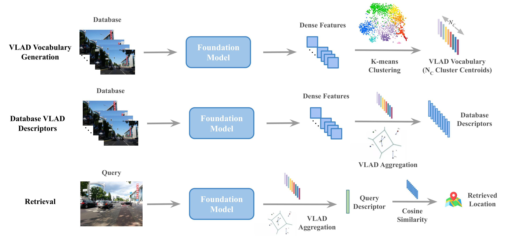

FoundVLAD: Exploring Foundation Models for Zero-shot Visual Place Recognition
Nikhil Keetha
(nkeetha),
Jay Karhade
(jkarhade)
CMU 16-824 (VLR) Course Project

FoundVLAD
leverages foundation model features to perform Zero-shot Visual Place Recognition.
Vocabulary Visualizations of Gardens Point Query Set
DINO ViT-S8
DINOv2 ViT-S14
Vocabulary Visualizations of different DINOv2 ViT-G14 Layers
Database Sample
Query Sample
Vocabulary Visualizations of different ViT Layers
DINO ViT-S8
DINOv2 ViT-S14